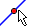

Typing text in the diagram pane. There are four ways to use.
Click a blank place in the diagram pane. Then a new window is created and you can type text in the new window. Then click the OK button. After a while, the text typed will appear in the diagram pane. Then you can use the Move Mode ( ) to move the text to any place in the pane. There are several options in the new window to change the font sizes, the font types, and the font colors.
Click the text in the pane. It creates a new with the text in it. Then you can change the text in the same way as above.
If the color option is blue, you are in Way 1. You need to start over again.
JGEX Help